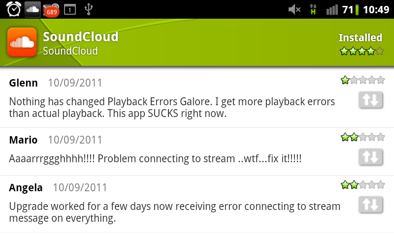
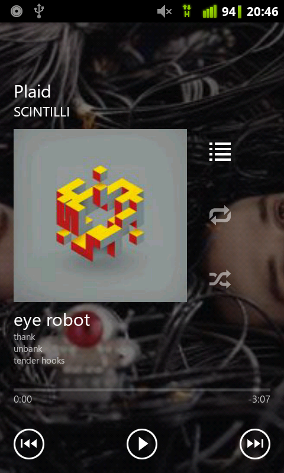
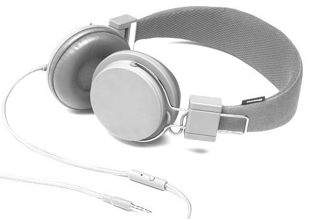

über mich
Android lead dev bei SoundCloud in Berlin
Audio-Sharing Plattform, gegründet 2007. Ca. 7 Mio User, web + API + native clients
Übersicht
- Erfahrungen + Herausforderungen
- Android Audio APIs
- Entwicklung mit dem NDK
- Designaspekte / Android-Integration
- HTML5 <audio>
SoundCloud Android app

record / share / stream
Herausforderungen
Android hat über 5 verschiedene Audio-APIs, mit unterschiedlicher Unterstützung in den Geräten
Neue Geräte
Implementierungsdetails ändern sich sehr schnell
- 2.1 Januar '10
- 2.2 Mai '10
- 2.3 Dez '10
- 3.0 Februar '11
Herausforderungen (2)

sehr schwer allen Benutzern eine konsistente Experience zu bieten
import android.media.*
Die verschienden Audio APIs
AudioTrack
Ausgabe von “rohen” Audio-Daten (PCM)
AudioTrack track = new AudioTrack(
AudioManager.STREAM_MUSIC, 44100,
AudioFormat.CHANNEL_CONFIGURATION_MONO,
AudioFormat.ENCODING_PCM_16BIT,
bufferSize, AudioTrack.MODE_STREAM);
track.play();
track.write(new byte[] { 1b, 2b, 3b }, 0, 3);
MediaPlayer
High-level Audio/Video player, unterstützt HTTP Streaming.
MediaPlayer player = new MediaPlayer();
player.setDataSource("http://foo.com/audio.mp3");
player.prepare();
player.start();
Die eigentliche Funktionalität wird von mehreren nativen Frameworks bereitgestellt
MediaRecorder
Gegenstück zum Player, Aufnahme über das Mikrofon / line-in.
Unterstützte Formate varieren stark mit der Plattform. Gute Qualität (AAC) erst ab Android 2.3.3 möglich.
Im Vergleich zu iOS keine Hardware-Unterstützung für en / decoding!
SoundPool
Low-latency, concurrent playback
Wird normalerweise für Soundeffekte bei Spielen eingesetzt
Ab 2.3: stagefright
Kompletter rewrite des Medienframeworks in Android 2.3.
(OpenCORE → stagefright)
Unterschiede
- Java API identisch,
- aber: Unterschiede zur Laufzeit
Ermittlung des Frameworks + spezifischer Code notwendig
hinzu kommt...
manche 2.3+ Geräte benutzen immer noch OpenCORE (v.a. Samsung) - Erkennung nicht immer 100% zuverlässig
if (android.os.BUILD.SDK_INT > 8) {
// enable seeking
}
fail!
“This app SUCKS right now.”

erschwertes debugging
MediaPlayer.OnErrorListener
All non-trivial abstractions, to some degree, are leaky.
The Law of Leaky Abstractions (Joel Spolsky)
include/media/stagefright/MediaErrors.h
namespace android {
enum {
MEDIA_ERROR_BASE = -1000,
ERROR_ALREADY_CONNECTED = MEDIA_ERROR_BASE,
ERROR_NOT_CONNECTED = MEDIA_ERROR_BASE - 1,
ERROR_UNKNOWN_HOST = MEDIA_ERROR_BASE - 2,
ERROR_CANNOT_CONNECT = MEDIA_ERROR_BASE - 3,
ERROR_IO = MEDIA_ERROR_BASE - 4,
// ...
}
}
...und “issues”
Testen der häufigsten Geräte
die alternative: go native
Das bedeutet:
- eigenes Streaming + Buffering
- dekodieren der Audiodaten mit nativen Code
- abspielen via AudioTrack-Interface
→ Aufwand vs. Kontrolle
OpenSL ES
OpenSL ES is an application-level C-language audio API designed for resource-constrained devices.
Seit Android 2.3 - zugänglich mit dem Android NDK (C/C++).
OpenSL ES (3)
Vermeidet den overhead von JNI, löst jedoch nicht das Latenzproblem.
Wichtig für realtime-Andwendungen, z.B. virtuelle Synthesizer.
Idealerweise < 10ms
Störfaktoren: CPU time, GC-Zyklen, JNI, I/O
Implikationen von nativem Code
Audiocode leicht portierbar, z.Zt. nur ARMv7 (FPU), später auch x86
Dank JNI problemloses Mischen von nativem und Java-Code möglich
Designaspekte von Audio apps
Ziel: harmonische Integration mit dem restlichen System
Hintergrundmusik
Android Service zwingend erforderlich
public class MyPlaybackService extends Service {
public void onCreate() {
startForeground(SERVICE_ID, getNotification());
}
}
Energiesparen

Mit WifiLocks, PowerLocks, ...
Lifecycle: MediaPlayer.release(), AudioTrack.stop()
Notifikationen
"Ongoing notification" für den aktuellen Track

(Spotify)
Notifikationen (2)
Albumartwork in Notifications
(UberMusic)
An die Hardware denken
Fernbedienung
Interesse daran anmelden
registerMediaButtonEventReceiver (ab 2.2)
AudioManager m = getAudioManager();
m.registerMediaButtonEventReceiver(
new ComponentName(getPackageName(),
RemoteControl.class.getName()));
Receiver:
public class RemoteControl extends BroadcastReceiver {
public void onReceive(Context c, Intent i) {
//
}
}
Nützliche Events (2)
ACTION_AUDIO_BECOMING_NOISY
Lockscreen
- com.android.music.metachanged
- com.android.music.playstatechanged
Darf ich Musik spielen?
// Android 2.2+
public void play() {
AudioManager m = getAudioManager();
m.requestAudioFocus(this, AudioManager.STREAM_MUSIC,
AudioManager.AUDIOFOCUS_GAIN);
}
public void onAudioFocusChange(int change) {
// play track if focus obtained
}
Wichtig wenn mehrere apps gleichzeitig laufen
Wenn's Telefon klingelt

TelephonyManager tmgr =
getTelephonyManager();
tmgr.listen(this,
PhoneStateListener.LISTEN_CALL_STATE);
public void onCallStateChanged(int state,
String incomingNumber) {
//
}
Sharing is caring
Verarbeitung:
<intent-filter>
<action android:name="android.intent.action.SEND"/>
<data android:mimeType="audio/*"/>
</intent-filter>
Erstellung:
<intent-filter>
<action android:name="android.intent.action.GET_CONTENT"/>
<data android:mimeType="audio/*"/>
</intent-filter>
Audio senden
TapeMachine
Audio senden (2)
TapeMachine: Share
Audio im Browser
HTML5: <audio>
<audio controls>
<source src="scotty.mp3" type="audio/mp3">
<source src="scotty.ogg" type="audio/ogg">
Your browser does not support the audio element.
</audio>
HTML5 <audio> auf Android
- 2.1 / 2.2 Browser unsterstützt nur <video> Tag
- Ab 2.3: <audio>
Getreue Umsetzung der HTML5 spec
html5test.com
flash is required
m.soundcloud.com
Zusammenfassung
- Audio-Support in Android ist mächtig
- schwer für alle Anwender / Geräte zu optimieren
- erhöhter Entwicklungsaufwand
- Wichtig ist gute Integration mit dem System
Ausblick
- ?
- Support für mehr Hardware MIDI-Controller
- Optimierungen (Latenz, Hardware acceleration ...)
- Hoffentlich mehr Musik/Audio apps, bes. auf Tablets
Resourcen
- code.google.com/p/andraudio
- Advanced Android audio techniques - (Google I/O '10)
- Last.fm Android app - https://github.com/c99koder/lastfm-android/
- audioboo app - https://github.com/Audioboo/audioboo-android/